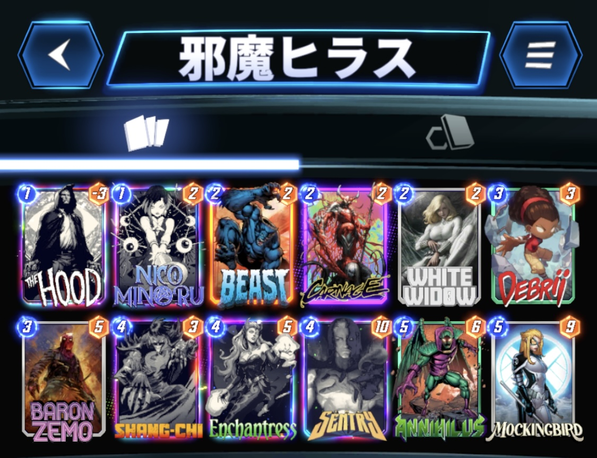

今回は、私７(@NANA1051815)が使用した『邪魔ヒラス』デッキを紹介したいと思います。
デッキ内容はこちら

1コスト：ザ・フッド、ニコ・ミノル
2コスト：ビースト、カーネイジ、ホワイト・ウィドウ
3コスト：デブリー、バロン・ジーモ
4コスト：シャンチー、エンチャントレス、セントリー
5コスト：アニヒラス、モッキンバード
それでは各カードを解説していきます。
役割はデーモンの獲得、ニコの呪文の素材、カーネイジの養分、アニヒラスで送るなど、実は使い道が多い。
ビーストで回収することでデーモンを複数枚所持することも可能。
多彩な呪文で状況に応じ使い分けが可能。
フッドをデーモンに換えたり、破壊して2ドローが強い。
リンボに対してもロケ変化で不意打ちも可能。
呪文は運だが握っているだけで安心感がある。
フッドやヴォイドなどマイナス要因の回収。
ホワイト・ウィドウやデブリーなど妨害札の再利用。
ロケーションのパワー調整など使い道が多い。
デブリーの岩やフッド、ヴォイドなどデメリットを一気にひっくり返す。
デッキの特性上ロケーションが圧迫されるので、その解消にもなる。
相手の妨害札に対しても対応できる。
相手のロケーションの妨害に適している。
2コストと小回りが利くのでビーストと組み合わせて複数回使用することが可能。
パワーは低めなのでニコの呪文や、カーネイジの養分としてもよい。
岩で相手のロケーションを圧迫させる。
こちらはビーストやカーネイジがいるので積極的に打っていい。
モッキンバードのコスト減少に大いに役立つ。
破壊相手には出しどころを考える必要がある。
モッキンバードのコスト減少兼、5パワーと高めで使いやすい。
相手のカードを呼び出すので5パワー以上のポテンシャルを持つ。
言わずもがな相手の高パワーカードを除去する。
最近の環境では入れない理由がない。
今の環境ではあまり採用されていないが、永続主体の相手にはかなり刺さるので一気に逆転できる。
パワー要員。
ヴォイドはアニヒラスで送るか、ビーストで回収するか、カーネイジで処理する。
相手のシャンチーには注意が必要。
ビースト、カーネイジを採用しているので無理に使う必要はないが、相手のロケーションを制圧できるなら積極的に使ってもよい。
ただし、ミラーやロキ相手には使うタイミングが難しい。
パワー要員。
デーモン、デブリー、ジーモ、ヴォイドの関係で低コストでの運用が可能。
パワーが9なのでシャンチーの心配がないのも強い。
戦い方としては、
①序盤はホワイト・ウィドウ、デブリーで相手を妨害、フッドでデーモンを確保
②ビーストで繰り返し妨害していくか、フッドを回収してさらにデーモンを確保するか、カーネイジでこちらのロケーションを空ける
③中盤以降は相手の出方を見つつパワーを出して逃げ切るのか、セントリーアニヒラスでさらに妨害して何もさせないのか、後攻に回りシャンチー、エンチャントレスで逆転するのか決める
④終盤は自分の思い描いた通りなら勝負していくが、微妙な時は撤退してもよい
デッキの傾向として、パワーの大きな上振れはないが、バランスよくどのデッキにも柔軟に対応可能である。
また負けるときは単純にパワー不足であることが多いので撤退の判断はつけやすい。
実際に戦って負けたのは破壊とロキだが、うまく妨害がはまれば十分に勝てる相手である。
如何せん癖が強いデッキであるため、慣れが必要だが、その分相手に読まれにくいデッキでもある。
参考にインフィニティコンクエスト全試合の動画を載せておきます。